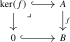
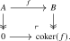
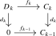
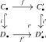
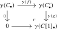

One of the foundational definitions of homological algebra is that of a chain complex: a sequence \(\{C_n\}_{n \in \Z }\) of abelian groups, equipped with boundary maps \(d_n\colon C_n \to C_{n-1}\) satisfying \(d_{n-1} \circ d_n = 0\). For every chain complex \(C_{\bullet }\), we may define its \(n\)-th homology group as the quotient of the kernel of \(d_{n}\colon C_n \to C_{n-1}\) by the image of \(d_{n+1}\colon C_{n+1} \to C_n\). One of the main examples of chain complexes in algebraic topology is the ‘singular chain complex’ \(C_{\bullet }^{\mathrm {sing}}(X;\Z )\) of a topological space \(X\), whose homology groups are precisely the ordinary homology groups of \(X\) studied axiomatically in Section 3.3 (cf. Remark 3.3.2).
While chain complexes define a 1-category \(\Ch (\Z )\), this category is in some sense ‘too rigid’ from the perspective of homotopy theory. For example, while the homology groups \(H_*(X;\Z )\) of a topological space are homotopy invariants, the singular chain complex \(C_{\bullet }^{\mathrm {sing}}(X;\Z )\) itself is not homotopy invariant: the singular chain complexes of two homotopy equivalent (but non-homeomorphic) spaces are hardly ever isomorphic to each other. To resolve this issue, we may pass to the derived category \(\D (\Z )\), which is obtained from \(\Ch (\Z )\) by inverting all quasi-isomorphisms: those morphisms of chain complexes that induce isomorphisms on homology groups.
In classical treatments, \(\D (\Z )\) is constructed as a triangulated category: a 1-category equipped with additional structure encoding exact sequences. However, this structure is somewhat unwieldy, and many natural constructions (such as limits and colimits, or functor categories) are difficult to perform in the triangulated setting. We will instead define \(\D (\Aa )\) as the \(\infty \)-categorical localization \[ \D (\Aa ) \quad := \quad \Ch (\Aa )[\{\text {quasi-isomorphisms}\}^{-1}] \] in the sense of Definition 1.5.19. The resulting \(\infty \)-category is stable, and the triangulated structure studied classically emerges as a shadow of the exact sequences coming from stability.
We now develop this theory systematically. After recalling the necessary background on abelian categories and their chain complexes in Subsection 6.1.1, we construct the derived \(\infty \)-category \(\D (\Aa )\) of an abelian category \(\Aa \) in Subsection 6.1.2 and establish its stability in Subsection 6.1.3.
6.1.1 Chain complexes in abelian categories
Notation 6.1.1. Let \(\Aa \) be an additive 1-category. We refer to fibers and cofibers in \(\Aa \) as kernels and cokernels, respectively:


If \(f\) is a monomorphism, we will use \(B/A\) as alternative notation for the cokernel.
Note that the map \(\ker (f) \to A\) is automatically a monomorphism, while \(B \twoheadrightarrow \coker (f)\) is automatically an epimorphism.
Definition 6.1.2. A 1-category \(\Aa \) is called an abelian category if it is additive, has kernels and cokernels, and a nullsequence \(A \xhookrightarrow {i} B \overset {p}{\twoheadrightarrow } C\) with \(i\) a monomorphism and \(p\) an epimorphism is a fiber sequence (i.e. \(A \iso \ker (p)\)) if and only if it is a cofiber sequence (i.e. \(\coker (i) \iso C\)). We will display such nullsequences as \[ 0 \to A \xhookrightarrow {i} B \overset {p}{\twoheadrightarrow } C \to 0, \] and refer to them as short exact sequences.
Example 6.1.3. The main example of an abelian category is the category \(\Ab \) of abelian groups. More generally the category \(\LMod _R(\Ab )\) of left modules over an associative ring \(R\) is abelian.
Example 6.1.4. The opposite \(\Aa \catop \) of an abelian category is again abelian.
The following are the basic properties of abelian categories we will need:
Proposition 6.1.5. Let \(\Aa \) be an abelian category.
- (1)
-
Every monomorphism \(i\colon A \hookrightarrow B\) is the kernel of its cokernel, and every epimorphism \(p\colon B \twoheadrightarrow C\) is the cokernel of its kernel.
- (2)
-
A morphism \(f\) is an isomorphism if and only if it is both a monomorphism and an epimorphism.
- (3)
-
The category \(\Aa \) admits all pullbacks and pushouts.
- (4)
-
Monomorphisms are closed under pushouts, and any pushout square along a monomorphism is also a pullback square.
- (5)
-
Epimorphisms are closed under pullbacks and any pullback square along an epimorphism is also a pushout square.
- (6)
-
Every morphism \(f\colon A \to B\) factors uniquely1 as an epimorphism followed by a monomorphism.
The factorization from (6) is denoted by \(A \twoheadrightarrow \im (f) \hookrightarrow B\), and we refer to the object \(\im (f)\) as the image of \(f\).
Proof. These are the standard exactness properties of an abelian category; see [Weibel (1994), Section 1.2]. We only recall that the image factorization is obtained by setting \[ \im (f):=\ker (B\twoheadrightarrow \coker (f)), \] and that a pushout of \(f\colon A \to B\) along \(g\colon A \to C\) is computed as the cokernel of \((f,-g)\colon A \to B \oplus C\). These descriptions give the remaining assertions and their duals. □
Definition 6.1.6. A nullsequence \(A \xrightarrow {f} B \xrightarrow {g} C\) in \(\Aa \) is called exact if the map \(\im (f) \to \ker (g)\) is an isomorphism.
Definition 6.1.7. A chain complex in \(\Aa \) is a pair \((C_{\bullet },d_{\bullet })\) consisting of a \(\Z \)-graded object \(C_{\bullet } = (C_n)_{n \in \Z }\), \(C_n \in \Aa \), and a collection of ‘boundary maps’ \(d_{\bullet } = (d_n\colon C_n \to C_{n-1})_{n \in \Z }\) satisfying the property that \(d_{n-1} \circ d_n = 0\) for all \(n\). We will often denote the chain complex simply by \(C_{\bullet }\) or \(C\).
A chain map (or morphism of chain complexes) \(f_{\bullet }\colon C_{\bullet } \to D_{\bullet }\) consists of a collection of morphisms \(f_n\colon C_n \to D_n\) that commute with the boundary maps, in the sense that \(d^D_n \circ f_n = f_{n-1} \circ d_n^C\) for all \(n\). There is a clear way to compose these, resulting in a 1-category \(\Ch (\Aa )\) of chain complexes in \(\Aa \).
Remark 6.1.8 (Cohomological grading of complexes). We grade chain complexes homologically, so that the differential \(d_n\colon C_n \to C_{n-1}\) lowers degree. Some references grade cohomologically instead, writing a complex as \((C^n)_{n \in \Z }\) with differential \(d^n\colon C^n \to C^{n+1}\) raising degree. The two conventions record the same data, related by negating the index: a homologically graded complex \((C_{\bullet }, d_{\bullet })\) becomes the cohomologically graded complex with \(C^n := C_{-n}\) and \(d^n := d_{-n}\), and conversely. We use homological grading throughout.
Example 6.1.9. Given an object \(A \in \Aa \) and \(k \in \Z \), we let \(A[k]\) denote the chain complex consisting of \(A\) concentrated in degree \(k\), meaning that \(A[k]_k := A\) while \(A[k]_n = 0\) for all \(n \neq k\); all boundary maps of \(A[k]\) are necessarily zero. This construction defines a fully faithful functor \((-)[k]\colon \Aa \hookrightarrow \Ch (\Aa )\) for all \(k\).
Example 6.1.10. Let \(C_{\bullet }\) be a chain complex. Given \(k \in \Z \), we define the shift \(C[k]_{\bullet }\) of \(C\) by \(C[k]_n := C_{n-k}\) and \(d^{C[k]}_n := (-1)^k d^C_{n - k}\).
Remark 6.1.11. The sign \((-1)^k\) in the differential of \(C[k]\) is a deliberate choice. It is slightly unusual: many references define the shift without any sign, setting \(d^{C[k]}_n := d^C_{n-k}\). Including the sign has the advantage that the shift agrees on the nose with the suspension of the derived \(\infty \)-category (see Theorem 6.1.30) rather than merely up to a natural isomorphism, and it is the convention that fits best with the shift functors of stable homotopy theory. As the two conventions produce isomorphic chain complexes, the choice affects none of the homological invariants.
Definition 6.1.12. Given a chain complex \(C_{\bullet }\) and an integer \(n\), the \(n\)-th homology of \(C_{\bullet }\) is the object \[ H_n(C) \quad := \quad \ker (d_n) \, / \, \im (d_{n+1}) \qin \Aa . \] Any chain map \(f_{\bullet }\colon C_{\bullet } \to D_{\bullet }\) induces a map \(H_n(f)\colon H_n(C) \to H_n(D)\) on \(n\)-th homology, resulting in a functor \(H_n(-)\colon \Ch (\Aa ) \to \Aa \).
Definition 6.1.13. A chain map \(f_{\bullet }\) is called a quasi-isomorphism if the induced map \(H_n(f)\colon H_n(C) \to H_n(D)\) is an isomorphism for all \(n\).
Given two chain maps \(f,g\colon C_{\bullet } \to D_{\bullet }\), a chain homotopy between \(f\) and \(g\) is a family of maps \((H_n\colon C_n \to D_{n+1})_{n \in \Z }\) satisfying \(f_n - g_n = \partial ^D \circ H_n + H_{n-1} \circ \partial ^C\). We say \(f\) is a chain homotopy equivalence if there exists a chain map \(g\colon D_{\bullet } \to C_{\bullet }\) and chain homotopies \(g \circ f \sim \id _{C_{\bullet }}\) and \(f \circ g \sim \id _{D_{\bullet }}\).
Definition 6.1.14 (Mapping cone). The mapping cone of a chain map \(f\colon C_{\bullet } \to D_{\bullet }\) is the chain complex \(\Cone (f)\) with \[ \Cone (f)_n := D_n \oplus C_{n-1}, \qquad d^{\Cone (f)}(y,x) := (d^D(y)+f(x),-d^C(x)). \] It fits into a natural short exact sequence \(0 \to D_{\bullet } \to \Cone (f) \to C_{\bullet }[1] \to 0\).
Lemma 6.1.15 (Mapping-cone criterion). A chain map \(f\colon C_{\bullet }\to D_{\bullet }\) is a quasi-isomorphism if and only if its mapping cone \(\Cone (f)\) is acyclic.
Proof. The long exact sequence in homology associated with the short exact sequence \[ 0\longrightarrow D_{\bullet }\longrightarrow \Cone (f)\longrightarrow C_{\bullet }[1]\longrightarrow 0 \] identifies the connecting maps with the maps on homology induced by \(f\). The claim follows immediately from exactness. □
Exercise 6.1.16. Show that every chain homotopy equivalence is a quasi-isomorphism.
An important fact from homological algebra we will use is that short exact sequences of chain complexes result in long exact sequences of homology groups. We will state it as a black box; a proof may be found in [Weibel (1994), Theorem 1.3.1].
Proposition 6.1.17. Let \(0 \to C_{\bullet } \xhookrightarrow {f} D_{\bullet } \overset {g}{\twoheadrightarrow } E_{\bullet } \to 0\) be a short exact sequence in \(\Ch (\Aa )\). Then there exist maps \(\partial _n \colon H_n(E) \to H_{n-1}(C)\) for all \(n\), and the sequence \[ \dots \xrightarrow {g} H_{n+1}(E) \xrightarrow {\partial _{n+1}} H_{n}(C) \xrightarrow {f} H_n(D) \xrightarrow {g} H_n(E) \xrightarrow {\partial _n} H_{n-1}(C) \xrightarrow {f} \dots \] in \(\Aa \) is exact. □
When \(\Aa \) is modules over a ring, the boundary map has the familiar elementwise description. Represent a class in \(H_n(E)\) by a cycle \(x\in E_n\), lift it to \(y\in D_n\), and write \(d(y)=f(z)\) for some \(z\in C_{n-1}\). Then \(z\) is a cycle and \(\partial _n([x])=[z]\). The standard diagram chase shows that this is independent of all choices and proves exactness; see again [Weibel (1994), Theorem 1.3.1].
Corollary 6.1.18. Given a short exact sequence \(0 \to C_{\bullet } \xhookrightarrow {f} D_{\bullet } \overset {g}{\twoheadrightarrow } E_{\bullet } \to 0\), the map \(f\) is a quasi-isomorphism if and only if \(E_{\bullet }\) has trivial homology. □
6.1.2 Derived \(\infty \)-categories
Fix an abelian category \(\Aa \) for the remainder of this subsection.
Definition 6.1.19. We define the derived \(\infty \)-category of \(\Aa \) as the (\(\infty \)-categorical) localization of the 1-category \(\Ch (\Aa )\) of chain complexes at the class of quasi-isomorphisms: \[ \D (\Aa ) := \Ch (\Aa )[\{\text {quasi-isomorphisms}\}^{-1}]. \] We will sometimes refer to objects of \(\D (\Aa )\) as complexes. This is slightly abusive terminology: objects of \(\D (\Aa )\) should best be thought of as ‘chain complexes up to quasi-isomorphism’ and in particular do not determine a well-defined chain complex in \(\Aa \).
Example 6.1.20. Let \(R\) be an associative ring, and consider the abelian category \(\Aa = \RMod _R(\Ab )\) of right \(R\)-modules in the category of abelian groups. We denote the resulting derived \(\infty \)-category by \(\D (R) := \D (\RMod _R(\Ab ))\). In particular \(\D (\Z ) = \D (\Ab )\).
Recall from Example 6.1.9 that \(\Ch (\Aa )\) contains \(\Aa \) as a full subcategory, given by those chain complexes concentrated in degree \(0\). We will now show that the resulting functor \(\Aa \to \D (\Aa ), A \mapsto A[0]\) is still fully faithful. Note that this is not immediately clear, since the localization functor \(\Ch (\Aa ) \to \D (\Aa )\) is far from fully faithful: for objects \(A, B \in \Aa \) there are no nonzero chain maps \(A[0] \to B[n]\) when \(n > 0\) (the nonzero terms sit in different degrees), whereas the corresponding morphisms in \(\D (\Aa )\) compute the Ext-groups \(\Ext ^n_{\Aa }(A,B)\) (see Section 6.4), which are frequently nonzero.
We will proceed by showing that complexes can be ‘truncated’ both from below and from above: given a complex \(C\), there is a universal approximation of \(C\) from the left by a complex concentrated in non-negative degrees, and from the right by a complex concentrated in non-positive degrees. By truncating from both directions, we can force the complex to be concentrated in degree \(0\). These truncation operations will descend to the level of derived \(\infty \)-categories, and will induce an equivalence between \(\Aa \) and the full subcategory of \(\D (\Aa )\) on those complexes whose homology is concentrated in degree zero.
Notation 6.1.21. Given \(k \in \Z \), we denote by \(\Ch (\Aa )_{\geq k} \subseteq \Ch (\Aa )\) the full subcategory spanned by those chain complexes \(C_{\bullet }\) satisfying \(C_n = 0\) for \(n < k\). Similarly, we write \(\Ch (\Aa )_{\leq k}\) for the full subcategory on those chain complexes satisfying \(C_n = 0\) for \(n > k\). We denote by \[ \D (\Aa )_{\geq k} \, := \, \Ch (\Aa )_{\geq k}[\{\text {quasi-isos}\}^{-1}], \qquad \qquad \D (\Aa )_{\leq k} \, := \, \Ch (\Aa )_{\leq k}[\{\text {quasi-isos}\}^{-1}] \] the localizations of these subcategories at the quasi-isomorphisms.
Proposition 6.1.22. For an integer \(k\), the following hold:
- (1)
-
The inclusion \(\Ch (\Aa )_{\geq k} \hookrightarrow \Ch (\Aa )\) admits a right adjoint \(\tau _{\geq k}\colon \Ch (\Aa ) \to \Ch (\Aa )_{\geq k}\).
- (2)
-
The induced functor \(\D (\Aa )_{\geq k} \to \D (\Aa )\) is fully faithful and admits a right adjoint \(\tau _{\geq k}\colon \D (\Aa ) \to \D (\Aa )_{\geq k}\).
- (3)
-
Dually, the inclusion \(\Ch (\Aa )_{\leq k} \hookrightarrow \Ch (\Aa )\) admits a left adjoint \(\tau _{\leq k}\colon \Ch (\Aa ) \to \Ch (\Aa )_{\leq k}\).
- (4)
-
The induced functor \(\D (\Aa )_{\leq k} \to \D (\Aa )\) is fully faithful and admits a left adjoint \(\tau _{\leq k}\colon \D (\Aa ) \to \D (\Aa )_{\leq k}\).
Proof. (1) Given a chain complex \(C\) and an integer \(k \in \Z \), we construct a new chain complex \(\tau _{\geq k}(C)\) as follows: \[ \tau _{\geq k}(C)_n := \begin {cases} C_n & n > k \\ \ker (d_k\colon C_k \to C_{k-1}) & n = k \\ 0 & n < k. \end {cases} \] The structure maps \(d_i\colon \tau _{\geq k}(C)_n \to \tau _{\geq k}(C)_{n-1}\) are the ones from \(C_{\bullet }\) when \(n > k\), are zero when \(n < k\), and for \(n = k\) is the canonical map \(C_{k+1} \to \ker (d_{k})\) induced by \(d_{k+1}\colon C_{k+1} \to C_k\). This construction is functorial in \(C\), defining a functor \[ \tau _{\geq k}\colon \Ch (\Aa ) \to \Ch (\Aa )_{\geq k}. \] There is a canonical chain map \(\epsilon \colon \tau _{\geq k}(C) \to C\) given by the identity in degree \(n > k\), by the zero map in degree \(n < k\), and in degree \(n = k\) by the inclusion \(\ker (d_k) \hookrightarrow C_k\). It is clear that this chain map is a monomorphism. Furthermore, if \(D\) is a chain complex such that \(D_n\) vanishes for \(n < k\), any chain map \(f\colon D \to C\) uniquely factors through \(\tau _{\geq k}(C)\): the commutative square

guarantees that \(f_k\) factors through \(\ker (d_k) \hookrightarrow C_k\). This shows that the transformation \(\epsilon \colon \tau _{\geq k} \to \id \) exhibits the functor \(\tau _{\geq k}\colon \Ch (\Aa ) \to \Ch (\Aa )_{\geq k}\) as right adjoint to the inclusion.
(2) Observe that the counit \(\epsilon \colon \tau _{\geq k}(C) \to C\) of the adjunction from part (1) induces isomorphisms \(H_n(\tau _{\geq k}(C)) \xrightarrow {\cong } H_n(C)\) for \(n \geq k\). Since we have \(H_n(\tau _{\geq k}(C)) = 0\) for \(n < k\), it follows that the functor \(\tau _{\geq k}\) sends quasi-isomorphisms to quasi-isomorphisms, hence induces a functor \[ \tau _{\geq k}\colon \D (\Aa ) \to \D (\Aa )_{\geq k}. \] In a similar way, the unit and counit of the adjunction from part (1) induce natural transformations at the level of derived \(\infty \)-categories, exhibiting \(\tau _{\geq k}\) as a right adjoint of the functor \(\D (\Aa )_{\geq k} \to \D (\Aa )\) induced by the inclusion. Since the unit of the adjunction is a natural isomorphism, it follows that this inclusion is fully faithful, showing (2).
Parts (3) and (4) are similar, and can be seen as instances of (1) and (2) applied to \(\Aa \catop \). The chain complex \(\tau _{\leq k}(C)_{\bullet }\) may be explicitly given as follows: \[ \tau _{\leq k}(C)_n := \begin {cases} 0 & n > k \\ \coker (d_{k+1}\colon C_{k+1} \to C_{k}) & n = k \\ C_n & n < k. \end {cases} \qedhere \] □
Definition 6.1.23. Fix an integer \(k \in \Z \). A complex \(A\) is called \(k\)-connective if \(H_n(A) = 0\) for \(n < k\). It is called \(k\)-coconnective if \(H_n(A) = 0\) for \(n > k\). When \(k = 0\), we simply speak of connective and coconnective complexes.
Corollary 6.1.24. The image of the inclusion \(\D (\Aa )_{\geq k} \hookrightarrow \D (\Aa )\) from the previous proposition consists of the \(k\)-connective complexes, while the image of \(\D (\Aa )_{\leq k} \hookrightarrow \D (\Aa )\) consists of the \(k\)-coconnective complexes.
Proof. The essential image of the first inclusion consists of those complexes \(C\) for which the counit map \(\tau _{\geq k}(C) \to C\) of the adjunction is an isomorphism in \(\D (\Aa )\), i.e. induces isomorphisms on homology. This happens precisely if the homology of \(C\) is trivial below degree \(k\), i.e. if \(C\) is \(k\)-connective. The argument for the second inclusion is dual. □
Corollary 6.1.25. Given a \(k\)-connective complex \(A \in \D (\Aa )_{\geq k}\) and a \((k-1)\)-coconnective complex \(B \in \D (\Aa )_{\leq k-1}\), we have \[ \Hom _{\D (\Aa )}(A,B) = 0. \]
Proof. By adjunction we have \(\Hom _{\D (\Aa )}(A,B) \simeq \Hom _{\D (\Aa )}(A,\tau _{\geq k}B) = 0\), where we use that \(\tau _{\geq k}B = 0\) as its homology is trivial. □
We are now finally in a position to deduce the full faithfulness of \(\Aa \hookrightarrow \D (\Aa )\).
Proposition 6.1.26. For every \(k \in \Z \), the composite \[ \Aa \xrightarrow {A \mapsto A[k]} \Ch (\Aa ) \to \D (\Aa ) \] is fully faithful, with essential image those complexes whose homology is concentrated in degree \(k\).
Proof. Let \(\Ch (\Aa )_{=k} \subseteq \Ch (\Aa )\) denote the subcategory of chain complexes \(C_{\bullet }\) satisfying \(C_n = 0\) for \(n \neq k\). Then the assignment \(A \mapsto A[k]\) induces an equivalence \(\Aa \iso \Ch (\Aa )_{=k}\). The adjunction \(\Ch (\Aa )_{\geq k} \rightleftarrows \Ch (\Aa )\) restricts to an adjunction \(\Aa \simeq \Ch (\Aa )_{=k} \rightleftarrows \Ch (\Aa )_{\leq k}\), and since both functors preserve quasi-isomorphisms, we get an induced adjunction \[ \Aa \rightleftarrows \D (\Aa )_{\leq k}, \] where the left adjoint is fully faithful as the unit is a natural isomorphism. The functor in question is now given by the composite \[ \Aa \hookrightarrow \D (\Aa )_{\leq k} \hookrightarrow \D (\Aa ), \] hence is fully faithful as well. □
6.1.3 Stability of derived \(\infty \)-categories
We will now show that \(\D (\Aa )\) is a stable \(\infty \)-category, and that it has small (co)limits whenever \(\Aa \) has small (co)products that interact nicely with the abelian structure. The main input will be to show that short exact sequences of chain complex in \(\Aa \) result in exact sequences in \(\D (\Aa )\). To get a handle on fibers and cofibers in \(\D (\Aa )\), we will equip \(\Ch (\Aa )\) with the structure of an ‘\(\infty \)-category with weak equivalences and (co)fibrations’, as introduced in Definition 2.2.4, and then apply the results from Section 2.2.
Proposition 6.1.27. Let \(\Aa \) be an abelian category. Then the triple \((\Ch (\Aa ), \textup {quasi-isos}, \textup {monos})\) is an \(\infty \)-category with weak equivalences and cofibrations. It admits functorial factorizations, and is homotopy cocomplete whenever \(\Aa \) satisfies (AB3) and (AB4), i.e. \(\Aa \) has small coproducts and monomorphisms are closed under small coproducts.
Proof. We verify the (dualized) axioms from Definition 2.2.4:
(1) The 2-out-of-3 property for quasi-isomorphisms follows immediately from the 2-out-of-3 property for isomorphisms in \(\Aa \).
(2) All isomorphisms are monomorphisms, and since \(\Ch (\Aa )\) is again an abelian category the monomorphisms are closed under compositions and pushouts; see Proposition 6.1.5. Note that every chain complex is cofibrant, since the map \(0 \to C\) is a monomorphism for all \(C \in \Ch (\Aa )\).
(3) Consider a pushout square in \(\Ch (\Aa )\) of the form

where \(i\) and \(i'\) are monomorphisms and \(i\) is a quasi-isomorphism. We need to show that also \(i'\) is a quasi-isomorphism. Let \(E_{\bullet }\) be the cokernel of \(i\) and let \(E'_{\bullet }\) be the cokernel of \(i'\). Since \(i\) is a quasi-isomorphism, it follows from Corollary 6.1.18 that the homology of \(E_{\bullet }\) is trivial. By the pasting law for pushout squares, we see that the induced map \(E_{\bullet } \to E'_{\bullet }\) is an isomorphism of chain complexes, and so also the homology of \(E'_{\bullet }\) is trivial. By applying Corollary 6.1.18 in the other direction, it follows that \(i'\) is a quasi-isomorphism.
(4) We now show that any chain map \(f\colon C_{\bullet } \to D_{\bullet }\) factors functorially as a monomorphism followed by a quasi-isomorphism. Define the mapping cylinder \(\Cyl (f)\) of \(f\) as the chain complex defined by \((\Cyl (f))_n = C_n \oplus C_{n-1} \oplus D_n\). The differential \(d^{\Cyl (f)}\colon (\Cyl (f))_n \to (\Cyl (f))_{n-1}\) is given by \[ d^{\Cyl (f)} \quad := \quad \begin {pmatrix} d^C & \id _C & 0 \\ 0 & -d^C & 0 \\ 0 & -f & d^D \end {pmatrix}, \] i.e. in terms of elements we have \(d^{\Cyl (f)}(c_n, c_{n-1}, d_n) := (d^C c_n + c_{n-1}, -d^C c_{n-1}, -f(c_{n-1}) + d^D d_n)\). There is a chain map \(i_C\colon C_{\bullet } \to \Cyl (f)_{\bullet }\) given by \(i_C(c_n) = (c_n, 0, 0)\), and a chain map \(p\colon \Cyl (f)_{\bullet } \to D_{\bullet }\) given by \(p(c_n, c_{n-1}, d_n) = f(c_{n}) + d_n\). Note that the constructions of \(\Cyl (f)\), \(i_C\) and \(p\) are functorial in \(f\) and that \(f = p \circ i_C\), so this provides a functorial factorization of \(f\). Since \(i_C\) is clearly a monomorphism, it remains to show that \(p\) is a quasi-isomorphism. By Exercise 6.1.16, it suffices to show that \(p\) is in fact a chain homotopy equivalence. We claim that the chain map \(i_D\colon D_{\bullet } \to \Cyl (f)_{\bullet }\) given by \(i_D(d_n) = (0, 0, d_n)\) is a chain homotopy inverse for \(p\). It is clear that \(p \circ i_D = \id _{D_{\bullet }}\), so it remains to construct a chain homotopy \(H\) between \(i_D \circ p\) and \(\id _{\Cyl (f)_{\bullet }}\). Such a chain homotopy is given by \(H_n(c_n,c_{n-1},d_n) := (0, c_n,0)\).
We have thus shown that the triple \((\Ch (\Aa ), \textup {quasi-isos}, \textup {monos})\) is an \(\infty \)-category with weak equivalences and cofibrations, and that it has functorial factorizations. Under the assumption that \(\Aa \) satisfies (AB3) and (AB4), the category \(\Ch (\Aa )\) inherits arbitrary coproducts from \(\Aa \), formed degreewise, and monomorphisms in \(\Ch (\Aa )\) are again closed under arbitrary coproducts. Moreover, since the coproduct functor \(\bigoplus _I \colon \Ch (\Aa )^I \to \Ch (\Aa )\) is exact, it commutes with formation of homology, and it follows that an arbitrary coproduct of quasi-isomorphisms is again a quasi-isomorphism. This verifies the (dualized) conditions from Definition 2.2.10, showing that \(\Ch (\Aa )\) is homotopy cocomplete. □
Corollary 6.1.28. Let \(\Aa \) be an abelian category. The triple \((\Ch (\Aa ), \textup {quasi-isos}, \textup {epis})\) is an \(\infty \)-category with weak equivalences and fibrations. It admits functorial factorizations, and is homotopy complete whenever \(\Aa \) satisfies (AB3\(^*\)) and (AB4\(^*\)), i.e. \(\Aa \) has small products and epimorphisms are closed under small products.
Proof. This is a special case of Proposition 6.1.27 applied to the abelian category \(\Aa \catop \), using that \(\Ch (\Aa \catop ) \simeq \Ch (\Aa )\catop \). □
Corollary 6.1.29. Let \(\Aa \) be an abelian category.
- (1)
-
The derived \(\infty \)-category \(\D (\Aa )\) admits finite limits and finite colimits.
- (2)
-
If \(\Aa \) satisfies (AB3) and (AB4), then \(\D (\Aa )\) admits small colimits. If it satisfies (AB3\(^*\)) and (AB4\(^*\)) then \(\D (\Aa )\) admits small limits.
- (3)
-
The localization functor \(\gamma \colon \Ch (\Aa ) \to \D (\Aa )\) preserves pushouts along monomorphisms and preserves pullbacks along epimorphisms.
- (4)
-
For a short exact sequence \(0 \to C_{\bullet } \hookrightarrow D_{\bullet } \twoheadrightarrow E_{\bullet } \to 0\) in \(\Ch (\Aa )\), the induced sequence \[ \gamma (C_{\bullet }) \to \gamma (D_{\bullet }) \to \gamma (E_{\bullet }) \] in \(\D (\Aa )\) is both a fiber sequence and a cofiber sequence.
Proof. Parts (1)-(3) follow directly from applying Theorem 2.2.8, Theorem 2.2.11, and Corollary 2.2.9 to the structures established in Proposition 6.1.27 and Proposition 6.1.28. Part (4) is a specific case of (3). □
We are now ready to prove the main result of this section:
Theorem 6.1.30. For any abelian category \(\Aa \), the derived \(\infty \)-category \(\D (\Aa )\) is stable. Moreover, the localization functor \(\gamma \colon \Ch (\Aa ) \to \D (\Aa )\) sends short exact sequences to exact sequences.
Proof. Assuming stability, the last claim is immediate from part (4) of the previous corollary. For stability, we saw in Corollary 6.1.29 that \(\D (\Aa )\) admits finite limits and finite colimits. Moreover, the localization functor \(\gamma \colon \Ch (\Aa ) \to \D (\Aa )\) preserves the zero object, so \(\D (\Aa )\) is pointed. By Theorem 4.2.2, it remains to show that the unit and counit of the adjunction \(\Sigma \dashv \Omega \) is an equivalence. By the universal property of \(\gamma \colon \Ch (\Aa ) \to \D (\Aa )\), this amounts to showing that for a chain complex \(C_{\bullet }\), the unit \(\gamma (C_{\bullet }) \to \Omega \Sigma \gamma (C_{\bullet })\) and the counit \(\Sigma \Omega \gamma (C_{\bullet }) \to \gamma (C_{\bullet })\) are isomorphisms in \(\D (\Aa )\).
To this end, consider the chain complex \(C'_{\bullet }\) defined by \(C'_n := C_n \oplus C_{n-1}\), with differential \(d^{C'}_n(c_n,c_{n-1}) = (d^Cc_n + c_{n-1}, -d^Cc_{n-1})\); note that this is the mapping cylinder of the map \(C_{\bullet } \to 0\). The maps \(f(c_n) := (c_n,0)\) and \(g(c_n,c_{n-1}) := c_{n-1}\) define a short exact sequence \[ 0 \to C_{\bullet } \xhookrightarrow {f} C'_{\bullet } \overset {g}{\twoheadrightarrow } C[1]_{\bullet } \to 0, \] and by part (4) of Corollary 6.1.29 the resulting commutative square

in \(\D (\Aa )\) is both a pullback square and a pushout square. Since the map \(C'_{\bullet } \to 0\) is a quasi-isomorphism, we get \(\gamma (C'_{\bullet }) \simeq 0\), so this square simultaneously exhibits \(\gamma (C[1]_{\bullet })\) as the suspension of \(\gamma (C_{\bullet })\) and \(\gamma (C_{\bullet })\) as the loops of \(\gamma (C[1]_{\bullet })\). We conclude that the maps \(\gamma (C_{\bullet }) \to \Omega \Sigma \gamma (C_{\bullet })\) and \(\Sigma \Omega \gamma (C_{\bullet }) \to \gamma (C_{\bullet })\) are isomorphisms in \(\D (\Aa )\). □
Remark 6.1.31. The proof shows that the localization functor \(\Ch (\Aa ) \to \D (\Aa )\) turns the explicit shift functor \((-)[n]\) from Example 6.1.10 into the abstract shift functor \([n]\) in the stable \(\infty \)-category \(\D (\Aa )\).
Corollary 6.1.32. For a complex \(A \in \D (\Aa )\) and \(n \in \Z \), there exists a functorial exact sequence in \(\D (\Aa )\) of the form \[ \tau _{\geq n} A \to A \to \tau _{\leq n-1} A. \]
Proof. For a chain complex \(C_{\bullet } \in \Ch (\Aa )\), put \(Q_{\bullet }:=C_{\bullet }/\tau _{\geq n}C_{\bullet }\). There is a functorial short exact sequence \[ 0 \to \tau _{\geq n} C_{\bullet } \hookrightarrow C_{\bullet } \twoheadrightarrow Q_{\bullet } \to 0. \] The natural map \(Q_{\bullet }\to \tau _{\leq n-1}C_{\bullet }\), given in degree \(n-1\) by the quotient \(C_{n-1}\to \coker (d_n)\) and by the identity below that degree, is a quasi-isomorphism. The theorem therefore turns the displayed short exact sequence into an exact sequence \(\gamma \tau _{\geq n} \to \gamma \to \gamma \tau _{\leq n-1}\) in \(\Fun (\Ch (\Aa ),\D (\Aa ))\). By the universal property of \(\gamma \colon \Ch (\Aa )\to \D (\Aa )\), this descends to the desired exact sequence \(\tau _{\geq n}\to \id \to \tau _{\leq n-1}\). □
Notes
Generated from the authoritative LaTeX source.